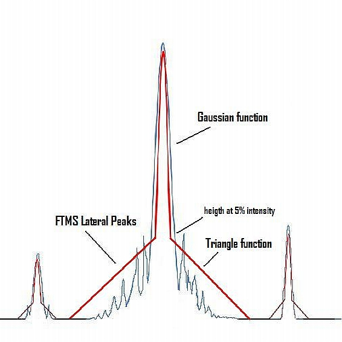

This model uses the same mathematical formula as Gauss peak model in conjunction with a simple geometric formula (rectangular triangle) to define this peak model. The Gauss function describes the top part (above of 5% of data point's intensity) and the geometric function the low part (below of 5% of data point's intensity).
The top part of the peak model uses the Gaussian function described in Gauss peak model.
|
|
The low part part is defined by a rectangular triangle function with triangle with a height of 5% intensity and the width of 1 m/z. The next figure shows this model.
|  |